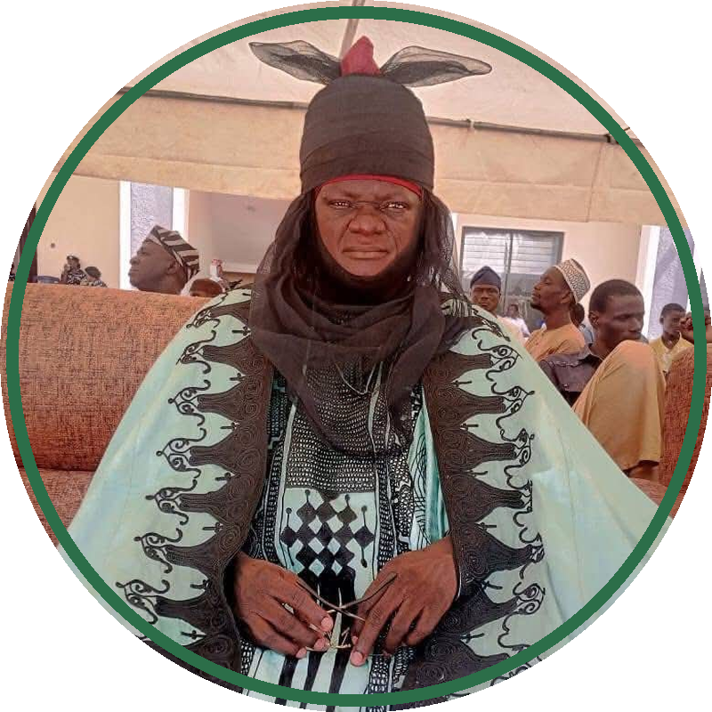

An ancient, independent Gwandara sovereign system — predating every other ethnic group in the area, and still standing today.
Gitata's chieftaincy mirrors the political systems of the early Hausa city-states — a divine, central authority surrounded by a hierarchical court of titleholders.
Depending on dialect and historical branch, a Gwandara settlement leader is traditionally addressed as Sarki, Sangari, Whurki, or Seleki. The paramount ruler handles village affairs, acts as spiritual custodian, and settles internal disputes.
Gitata's stool is a hereditary, sacred office — rooted in the lineage of the original Gwandara settlers who migrated from Kano.
The present title holder is HRH Danlami Rabo Turaki, the Sangarin Gitata.

Beneath the paramount ruler sits an organised council of titleholders, each managing a specific sector of community life.
Prime minister — chief advisor to the paramount ruler.
Administrator of internal affairs and community security.
Commander and protector of the territorial borders.
War captain — chief of defence.
Custodian of the community treasury and resources.
Chief of agriculture — a critical role, as the Gwandara are traditionally master subsistence farmers.
Beneath the central palace, authority trickles down to keep every extended family compound in order.
District heads, overseeing a cluster of villages on the paramount ruler's behalf.
Village heads, responsible for day-to-day affairs within a single settlement.
Ward or compound leaders, the closest layer of authority to each family unit.
Gitata's localised, independent status was gradually brought into the broader administrative boundaries of the Keffi and Karu divisions during the British colonial era.
Since the creation of Nasarawa State, Gitata's traditional leadership operates within the Karu LGA framework. Neighbouring Gwandara stools — such as the Abaga Toni of Kokona and the Emir of Karshi — have been elevated to top-tier government grading to preserve indigenous representation.
We've recorded the present Sarki — help us fill in the current cabinet chiefs and Hakimi for this page.
Send us the details